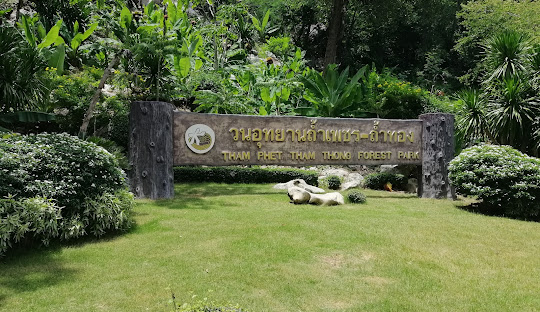
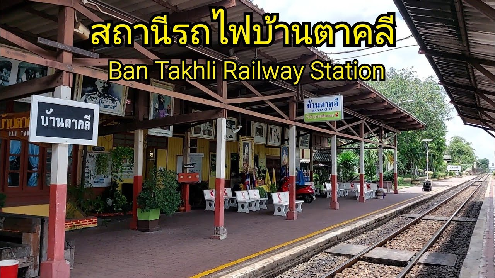

สถานที่ท่องเที่ยวแนะนำในตาคลี
อำเภอตาคลี จังหวัดนครสวรรค์ เป็นแหล่งท่องเที่ยวที่น่าสนใจในประเทศไทย ด้วยเสน่ห์ของธรรมชาติ วัฒนธรรม และประวัติศาสตร์ที่น่าค้นหา ตาคลีเต็มไปด้วยสถานที่ที่เหมาะสำหรับการพักผ่อนและสำรวจความงดงามที่ซ่อนเร้น
วนอุทยานถ้ำเพชร-ถ้ำทอง
สถานที่ท่องเที่ยวธรรมชาติที่มีถ้ำที่สวยงามและบรรยากาศเงียบสงบ เหมาะสำหรับการเดินป่าและชื่นชมความงามของธรรมชาติ อีกทั้งยังมีประวัติศาสตร์ที่น่าสนใจเกี่ยวกับชุมชนในอดีต
วัดหนองโพ
วัดที่มีความสำคัญทางศาสนาและประวัติศาสตร์ เป็นที่ประดิษฐานของหลวงพ่อเดิม พระพุทธรูปศักดิ์สิทธิ์ที่ได้รับความเคารพนับถือจากชาวบ้านและนักท่องเที่ยวทั่วประเทศ
พิพิธภัณฑ์จันเสน
สถานที่รวบรวมโบราณวัตถุและข้อมูลเกี่ยวกับประวัติศาสตร์และวิถีชีวิตของชาวจันเสนในอดีต เหมาะสำหรับผู้ที่สนใจเรียนรู้เกี่ยวกับวัฒนธรรมท้องถิ่น
สถานีรถไฟตาคลี
สถานีรถไฟที่มีบทบาทสำคัญในประวัติศาสตร์การขนส่งของประเทศไทย และยังคงความสวยงามแบบคลาสสิกของสถาปัตยกรรมในอดีต
อาหารท้องถิ่น
อย่าลืมลองชิมอาหารท้องถิ่นของตาคลี เช่น ขนมเปี๊ยะ หมูสะเต๊ะ และเมนูพื้นบ้านที่มีรสชาติอร่อยและเป็นเอกลักษณ์
อำเภอตาคลีมีทั้งธรรมชาติที่งดงาม วัฒนธรรมที่น่าสนใจ และบรรยากาศที่อบอุ่น ทำให้ที่นี่เป็นจุดหมายปลายทางที่ไม่ควรพลาดสำหรับนักเดินทาง